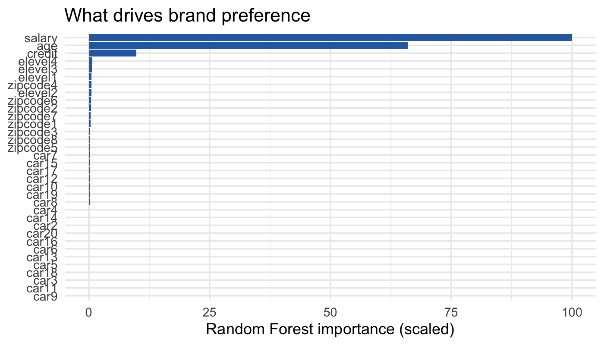
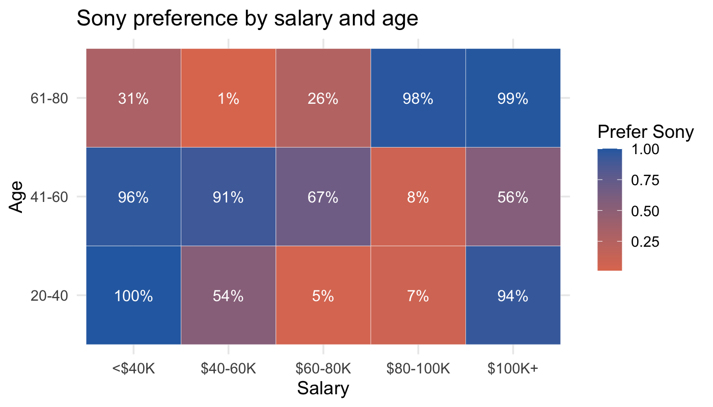
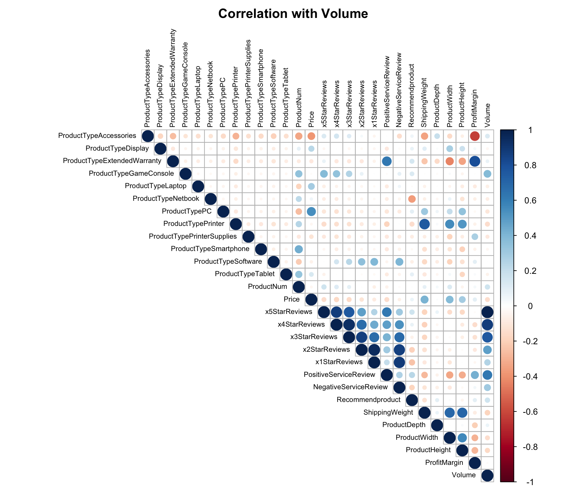
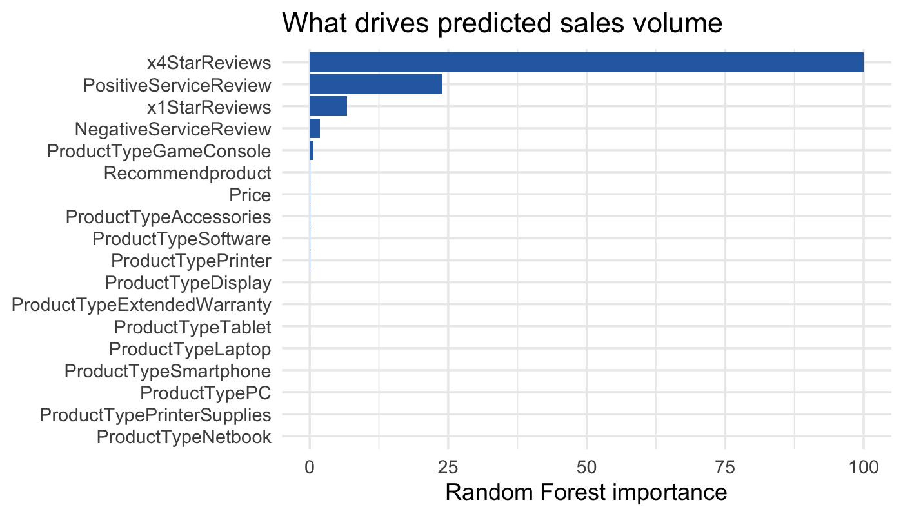
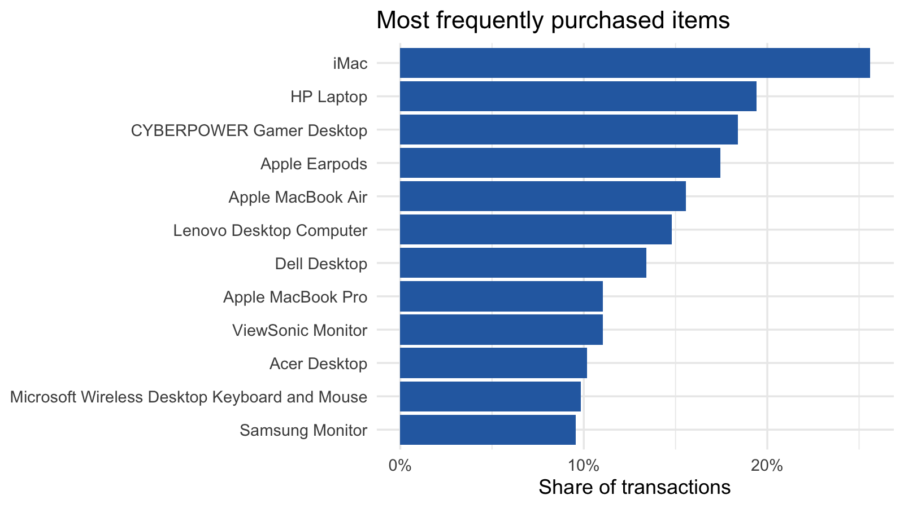
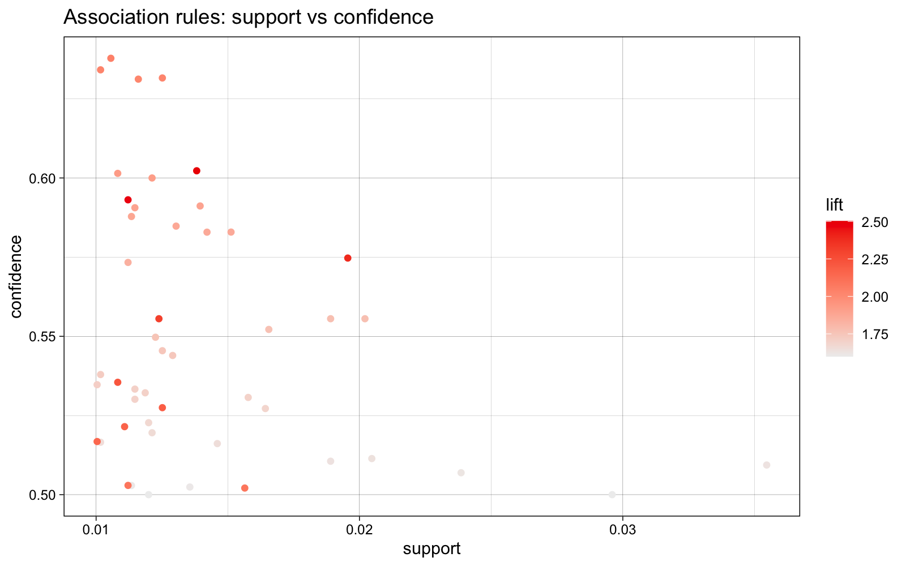

Data · ML
Predictive Analytics in R
Three analyses in R for an electronics retailer weighing a partnership and an acquisition: which brand a customer prefers, how much a new product will sell, and what a competitor's shoppers buy together. Each ends in a recommendation and a clear statement of what the data can't support.
- R (caret, randomForest, C5.0, kernlab, gbm, arules)
- Classification & regression
- Cross-validation & model selection
- Feature selection
- Association rule mining
- Data leakage detection
- Business recommendation
Results at a glance
| Question | Method | Result | Recommendation |
|---|---|---|---|
| Which brand do customers prefer, Sony or Acer? | C5.0 and Random Forest, 10-fold CV | 92.3% hold-out accuracy (baseline 62.2%). Salary and age drive it | Pursue a deeper Sony relationship |
| How much will 13 new products sell? | RF vs SVM vs GBM vs linear, repeated CV | RF CV RMSE ≈ 719 units (SD of volume = 1,517) | Re-focus on PCs: 15% of predicted volume, 49% of predicted profit |
| What do a competitor's customers buy together? | Apriori on 9,835 baskets | Strongest rules: 2–3 items → HP Laptop / iMac, lift 2–2.5 | Treat as a B2B hypothesis to test, not proof |
1 · Brand preference: Sony or Acer?
The question. A survey of 9,898 customers recorded salary, age, education level, car, zip code, credit, and the brand they preferred. A further 5,000 responses were missing the brand. The retailer wanted to know which brand those people lean toward, and which questions are worth asking at all.
Approach. Brand is binary (62% prefer Sony), so this is classification. I split 75/25, trained C5.0 and Random Forest with 10-fold cross-validation, and judged them on the untouched 25%. Education, car and zip code are coded categories, so I treated them as factors, not numbers.
What the data showed. - Both models land at the same place: 92.5% (C5.0) and 92.3% (RF) on the hold-out set, against 62.2% for always guessing Sony. I chose RF for its slightly higher CV accuracy (92.1% vs 91.7%); the gap is within noise. - Salary and age carry almost everything. Credit is a distant third. Education, car and zip code add close to nothing, so those survey questions can be dropped. - The relationship is not a straight line. Sony preference swings between ~0% and ~100% in alternating salary-age bands (for example, 100% for under-$40K aged 20–40, but 5% for $60–80K aged 20–40). That's why a tree-based model fits so much better than a linear one would.


Result on the 5,000 unlabelled responses: 3,108 predicted Sony (62%) and 1,892 Acer (38%), matching the split in the labelled data.
Recommendation. Pursue a deeper relationship with Sony, and cut the survey down to salary and age plus anything new worth testing.
Limits. Only two brands, so this says nothing about a third option. And the segments are sharp enough that I'd want to confirm they're real behaviour, not an artifact of how the survey data was generated.
2 · Sales forecast for new products
The question. For 13 upcoming PCs, laptops, netbooks and smartphones, predict unit sales and the profit each would add, using 80 existing products with price, review counts, service reviews, dimensions and sales volume.
Approach. 1. Encode and explore. One-hot encoded product type; built a correlation matrix against volume. 2. Catch a leak. The 5-star review count has a correlation of 1.00 with volume. In this dataset volume is exactly 4 × the 5-star count, so a model using it would look perfect and tell the retailer nothing about new products. I removed it, along with 3- and 2-star counts (collinear with 4-star), dimensions, weight, margin and product ID (all near zero correlation with volume). Best-seller rank was a third missing, so I dropped it. 3. Compare four models with 10-fold CV repeated three times: Random Forest, SVM (polynomial), Gradient Boosting and linear regression. 4. Choose on more than RMSE. The deciding test was whether the model produces usable forecasts for the new products.
| Model | CV RMSE | Negative forecasts on new products |
|---|---|---|
| SVM (poly) | 676 | 2 |
| Random Forest | 719 | 0 |
| Linear regression | 806 | 9 |
| Gradient Boosting | 969 | 7 |
SVM has a slightly lower RMSE, but the gap is small against a noisy 80-row dataset, and it forecasts negative sales for two products. I chose the Random Forest: the only model with no negative forecasts. Anyone using the output would trust a model that can't predict impossible numbers.


What the forecast shows. Multiplying predicted units by price and margin gives:
| Type | Share of predicted volume | Share of predicted profit |
|---|---|---|
| PC | 15% | 49% |
| Netbook | 44% | 26% |
| Smartphone | 35% | 9% |
| Laptop | 6% | 16% |

The best-selling item is a netbook (~1,360 units, ~$447K revenue). The most profitable is a PC (~391 units, ~$68K profit): high price and margin on modest volume.
Recommendation. Put the focus on PCs, which make the most profit per unit sold, and read netbook and smartphone volume as traffic, not profit.
Limits. 80 products is a small sample, and the hold-out slice is only 20 products, so I rely on repeated cross-validation, not a single split. A typical forecast is off by ~700 units, large for low-volume products. I'd treat these as rankings of products, not exact unit forecasts.
3 · Market basket analysis of a competitor
The question. The retailer was considering buying a competitor. 9,835 of the competitor's transactions were available, with 125 items. What do customers buy together, and what does that say about the business?
Approach. Apriori association rules (support, confidence, lift) after dropping the 22% of single-item baskets, which can't form a rule. I removed redundant rules and checked how each result changed as the thresholds moved.
What the data showed. - Top sellers: iMac (26% of baskets), HP Laptop (19%), CyberPower Gamer Desktop (18%). - Large baskets: the median basket has 3 items and 38% have five or more. That's unusually large for consumer retail. - Strongest rules (support ≥ 1%): a monitor plus a desktop or laptop predicts an HP Laptop or iMac with 50–64% confidence and lift 2.0–2.5. For example, {Acer Aspire, ViewSonic Monitor} → HP Laptop at 60% confidence (lift 2.5). - Stricter thresholds: rules above 85% confidence only exist at very low support (0.15%, 15–37 transactions each). They are real but too thin to plan around.


Interpretation. Big baskets of computers and monitors suggest business buyers outfitting offices, so an acquisition could open a B2B channel. This is an inference from basket shape. The data has no customer type field, so confirming it would need account-level data.
Recommendation. Treat B2B as the main reason to look closer. Before committing, get customer-segment data to confirm it. Rules like these also support store layout, bundles and cross-sell emails.
Limits. Many overlapping rules make it hard to pick the important ones. Lift tells you the association is real, but with 22% single-item baskets and a few dominant items, high support is partly just popularity.
What I'd do with more data
- Add more brands to the survey, so the model answers "which of several brands", not "Sony or Acer".
- Collect a few hundred more products and re-test SVM against RF, since the margin between them is currently noise.
- Join competitor transactions to customer type to test the B2B hypothesis directly.
Skills demonstrated
| Skill | Where it shows up |
|---|---|
| Classification & model evaluation | Brand preference: hold-out accuracy against a majority-class baseline, confusion matrices |
| Cross-validation & tuning | All models use caret with CV and tuned hyperparameters |
| Detecting data leakage | Sales: found that 5-star count = volume ÷ 4 and removed it |
| Model selection beyond a single metric | Sales: chose RF over lower-RMSE SVM because SVM forecasts negative sales |
| Feature selection | Correlation matrix to drop dimensions, margin, ID and collinear reviews |
| Association rule mining | Apriori with support / confidence / lift, redundancy filtering, threshold sensitivity |
| Business translation | Volume vs profit split, B2B hypothesis, what to ask in the survey |
| Reproducible code | Three R scripts in assets/pta-r-analytics/code/ (set DATA_DIR) |
Code
The full analysis as runnable R scripts (fixed seed 123). Point DATA_DIR at the folder with the raw CSVs and run them in order. The raw datasets are not included.
00_setup.R: shared settings01_brand_preference.R: Sony vs Acer classification02_sales_prediction.R: leak check, model comparison, new-product forecast03_market_basket.R: Apriori rules